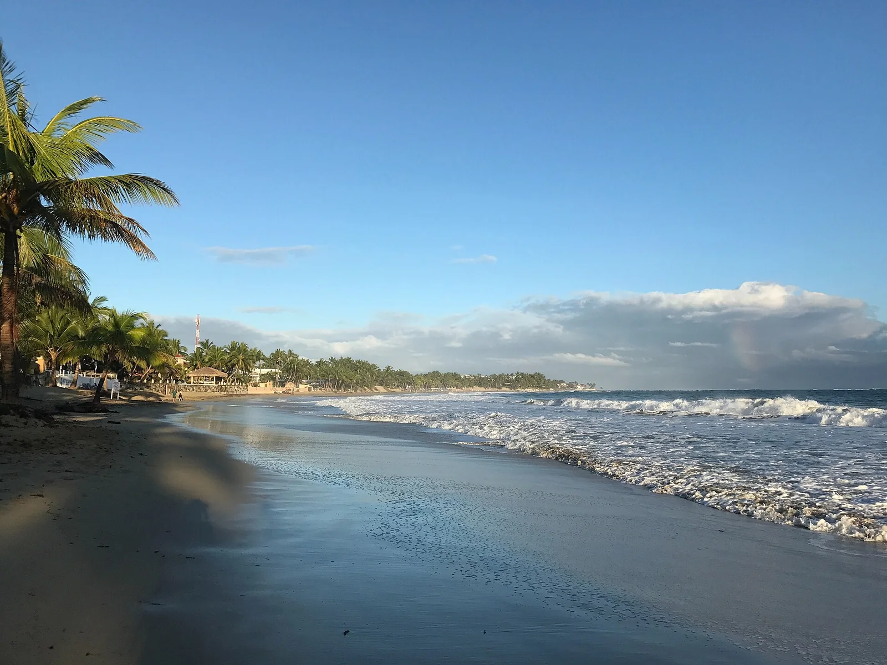

Cabarete
Rép. Dominicaine · kitesurf, windsurf, surf

Baie animée des Caraïbes : vent thermique l'après-midi pour le kite, vagues le matin pour le surf.
- Lieu
- Rép. Dominicaine
- Niveau
- Intermédiaire
- Activités
- kitesurf, windsurf, surf
- Type d'eau
- Mer / océan
- Coordonnées
- 19.76, -70.42 (position approximative du secteur)
Dangers à connaître
- Récif à l'entrée de la baie.
- Vent qui se lève en milieu de journée.
Le conseil d'Ocean Buddy
Surf le matin, kite l'après-midi quand le thermique entre.
Ouvrir dans Ocean Buddy Télécharger sur l'App Store
Source : Description historique Ocean Buddy · vérification externe en attente.